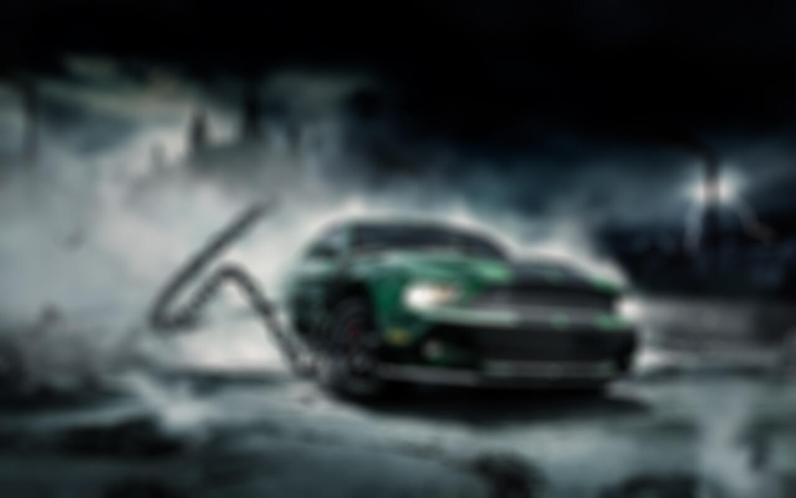

ВЫБЕРИ ИГРОВУЮ СЕРИЮ
7 фактов о поисках жизни во Вселенной
Минимальный набор знаний о последних исследованиях Солнечной системы и экзопланет, который поможет разобраться в теме
Всех волнует вопрос «Есть ли жизнь на других планетах?». Пока идут фундаментальные исследования в области астрономии и биологии, медиа продолжают публиковать статьи с заголовками «Обнаружена жизнь на N». Выбрали самое важное о последних открытиях в этой области, чтобы вы могли критически читать новостную ленту.
Где может существовать жизнь
Пока мы знаем лишь одну точку во Вселенной, где существует жизнь, — это Земля. Мы ищем условия, при которых может существовать белковая жизнь.

Как ищут следы жизни в других звездных системах
И, конечно, одной из самых волнующих перспектив всегда была возможность найти обитаемые планеты, следы жизни у других звезд. Ищут биомаркеры — это химические соединения биологического происхождения. Основным биомаркером на Земле, например, является присутствие кислорода в атмосфере.
- Вода на Марсе
- Три планеты в системе TRAPPIST-1
- Спутник Сатурна Энцелад Вода на Марсе
- Проксима b
Спутник Сатурна Энцелад
22 февраля 2017 года в звездной системе TRAPPIST-1 найдены семь планет, схожих по размеру и массе с Землей. Сразу три планеты оказались в зоне обитаемости, причем не просто по формальному попаданию в нужный диапазон расстояний — возможность наличия жидкой воды подтверждена моделированием их атмосфер. С другой стороны, нужно признать, что ни о каких даже предпосылках к обнаружению внеземной жизни не идет речи: есть несколько расхолаживающих моментов.
И, конечно, одной из самых волнующих перспектив всегда была возможность найти обитаемые планеты, следы жизни у других звезд. Ищут биомаркеры — это химические соединения биологического происхождения. Основным биомаркером на Земле, например, является присутствие кислорода в атмосфере.
- Вода на Марсе
- Три планеты в системе TRAPPIST-1
- Спутник Сатурна Энцелад Вода на Марсе
- Проксима b
- Спутник Сатурна Энцелад Вода на Марсе
- Проксима b
Спутник Сатурна Энцелад
22 февраля 2017 года в звездной системе TRAPPIST-1 найдены семь планет, схожих по размеру и массе с Землей. Сразу три планеты оказались в зоне обитаемости, причем не просто по формальному попаданию в нужный диапазон расстояний — возможность наличия жидкой воды подтверждена моделированием их атмосфер. С другой стороны, нужно признать, что ни о каких даже предпосылках к обнаружению внеземной жизни не идет речи: есть несколько расхолаживающих моментов.
И, конечно, одной из самых волнующих перспектив всегда была возможность найти обитаемые планеты, следы жизни у других звезд. Ищут биомаркеры — это химические соединения биологического происхождения. Основным биомаркером на Земле, например, является присутствие кислорода в атмосфере.
| Заголовок столбца | Заголовок столбца | Заголовок столбца | Заголовок столбца |
|---|---|---|---|
| Ячейка | Ячейка | Ячейка | Ячейка |
| Ячейка | Ячейка | Ячейка | Ячейка |
| Ячейка | Ячейка | Ячейка | Ячейка |